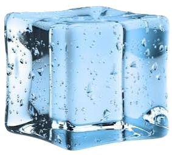

FoodSaver
FoodSaver
Tips for preserving food
Planning and Shopping
- Pre-trip check: Always take a photo of your fridges contents before heading to the store so you don t buy items you already have.
- The "One-Dish" Rule: Plan your menu for just 2 or 3 days at a time rather than a full week. This prevents food from spoiling if your plans change.
- Buying "lonely" bananas: Stores often have stray bananas left over after separating from the bunch. Pick them up—they ll get eaten regardless, whereas stores usually just throw them away.
- Skip bulk buying for perishables: Large packages are cost-effective only for dry goods (grains, pasta). Buy vegetables, herbs, and berries strictly according to your immediate needs.

Refrigerator Organization and Storage- "Eat Me First" Zone: Designate a specific box or shelf in the fridge for items nearing their expiration date.
- FIFO Rule (First In, First Out): Place new items at the back of the shelf and move older ones closer to the front.
- Proper Storage Partners: Never store tomatoes, apples, or bananas next to other fruits and vegetables. They release ethylene gas, which accelerates the ripening and spoilage of nearby produce.
- Dry herbs: Moisture causes herbs to spoil. Wash and thoroughly dry them, then store them in a container lined with a paper towel or in a jar of water (like a bouquet).
- Glass containers: Transfer opened canned goods, sauces, and leftovers into glass containers. Food stays fresh longer in glass than in plastic or tin cans.
Freezing is your primary weapon.
- Freezing leftover herbs: Chop dill, parsley, or cilantro, mix with olive oil or melted butter, and freeze in an ice cube tray. Youll have a ready-made seasoning for soups and pasta.
- Saving cheese thats drying out: Grate leftover cheese and store it in the freezer. You can take out portions as needed for pizzas or casseroles.
- Sauce and tomato paste cubes: Tomato paste in an open jar goes moldy quickly. Spoon it onto a tray, freeze, and then transfer the frozen portions to a bag.
- Freezing bananas: Peel bananas that are starting to turn black, slice them into pieces, and freeze. They make an ideal base for homemade smoothies and healthy ice cream.
Giving Food a Second Life (Culinary Tricks)
- Freezer stock bag: Keep a bag handy for collecting vegetable scraps (clean carrot peelings, onion ends, herb stems). Once the bag is full, use them to make a rich vegetable stock.
- Stale bread: Turn it into homemade garlic and herb croutons or breadcrumbs, or make French toast by soaking the slices in an egg-and-milk mixture.Stale bread: Turn it into homemade garlic and herb croutons or breadcrumbs, or make French toast by soaking the slices in an egg-and-milk mixture.
- Wilted vegetables: Slightly shriveled carrots, peppers, or zucchini may lose their crispness, but they retain all their flavor. Use them in stews, casseroles, pureed soups, or pasta sauces.
- Leftover wine: If there is some wine left over after a celebration, freeze it in an ice cube tray. Then, add these cubes when braising meat or making sauces.
Understanding markings
- "Use by" vs. "Best before": Pay attention to the wording. "Use by" is a strict safety criterion (applicable to meat and fish). The "Best before" label merely indicates the product's peak quality. Foods past their "Best before" date (such as grains, cookies, or chocolate) are usually perfectly safe to eat, provided they do not have an unpleasant odor or signs of mold.